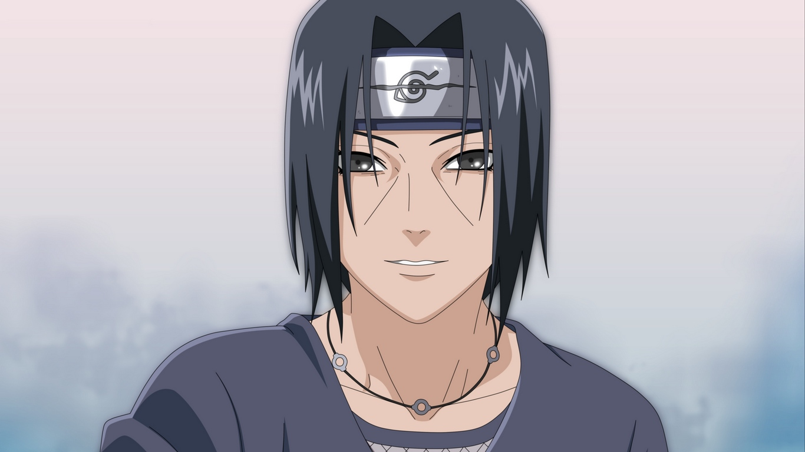

"A nameless shinobi who protects peace within it's own shadow...
THAT is a true shinobi"
Timeline
- Born June 9
- Age 4: Witnessed the devastating effects of the Third Great Ninja War
- Age 5: Met Shusui Uchiha, who later became his best friend
- Age 6:
- Joined The Hidden Leaf Ninja Academy
- Graduated four months later as a youngest post-war shinobi
- NJoined Team 2, with Yüki Minazuki as Team Captain
- Age 8: Witnessed the death of his team-mate, awakening his Sharingan
- Age 10: Became a chunin
- Age 11: Joined the Anbu Black Ops
- Age 13: Promoted to Anbu Captain
- Age 14:
- Murdered all his clan members, excluding Sasuke Uchiha, his younger brother
- Left the Hidden Leaf Village
- Joined the Akatsuki
- Age 17: Returned to the Hidden Leaf Village to capture Naruto Uzimaki
- Age 21: The Fated Battle Between Brothers and subsequent death